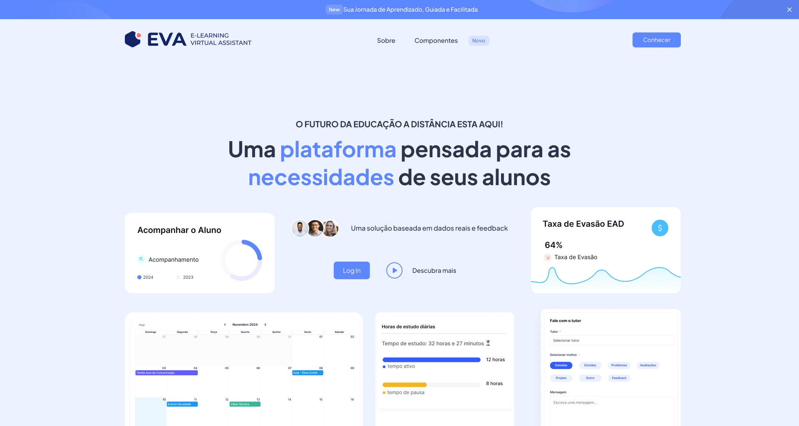
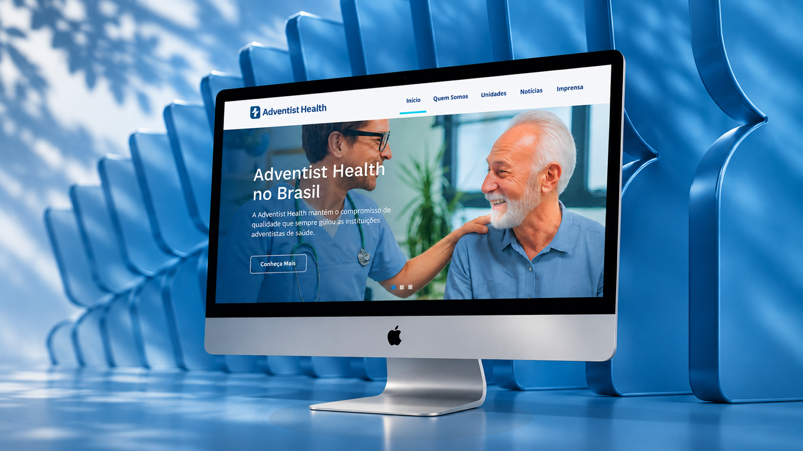
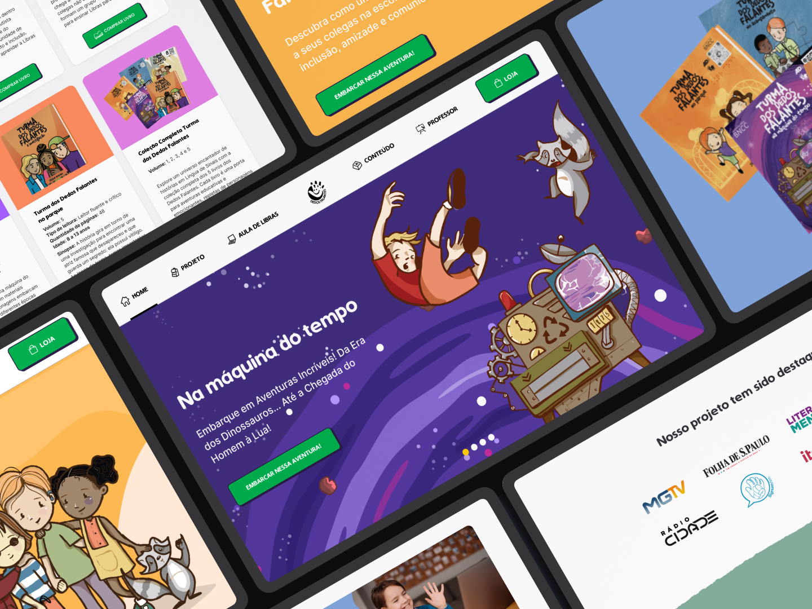
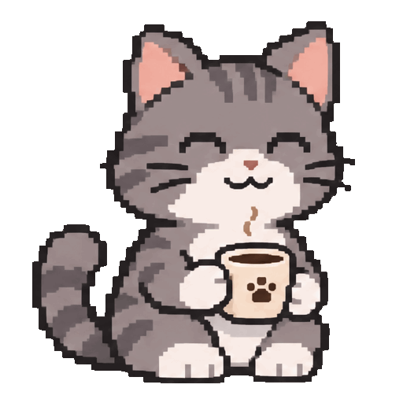

resultado-final.png · 1568 × 1003 px
resultado-final.png · 1568 × 1003 pxComponentes Curriculares
Sistema acadêmico para acompanhamento de atividades curriculares, estágios e extensão.
Sistema · UX/UI Design · Design System · UNASP TOTVSUma seleção de interfaces e experiências digitais desenvolvidas com atenção às pessoas, à navegação e aos detalhes.
resultado-final.png · 1568 × 1003 pxSistema acadêmico para acompanhamento de atividades curriculares, estágios e extensão.
Sistema · UX/UI Design · Design System · UNASP TOTVS
UX Research e interface para ambiente de aprendizagem.
Sistema · UX/UI Design
Redesign de site institucional, com foco em clareza e organização dos conteúdos.
Site · UX/UI Design
Redesign de site para um projeto educativo de Libras, com foco na organização dos conteúdos e na experiência visual.
Site
Os projetos já existem, mas ainda estou organizando tudo para mostrar por aqui. Entre o design, a maternidade e algumas xícaras de café, vou atualizando esse cantinho aos poucos. ☕
Algumas das marcas que fizeram parte da minha trajetória.
Entre em contato para conversar sobre projetos e oportunidades.
Enviar e-mail ↗